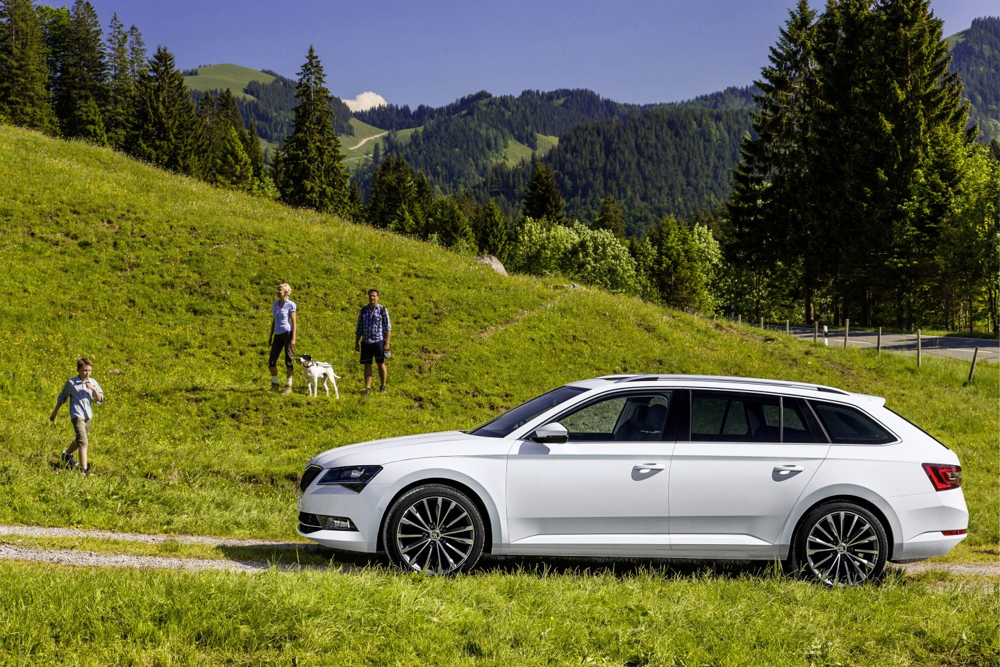

Mapy odsyłaczy (Image Map)
Mapa odsyłaczy pozwala na stworzenie obrazka, który ma kilka klikalnych obszarów. Każdy obszar może prowadzić do innego linku.
Jest to starsza, ale nadal spotykana technika w HTML.
Jak to działa?
Używamy:
- <img usemap> – przypisuje mapę do obrazka
- <map> – definiuje mapę
- <area> – klikalne obszary
Przykład kodu
<img src="skoda.jpg" usemap="#mapaObrazka">
<map name="mapaObrazka">
<area target="_blank" alt="Opona" title="Opona" href="https://oponeo.pl" coords="624,770,74" shape="circle">
<area target="_blank" alt="Felga" title="Felga" href="https://eshop.skoda-auto.com/pl_PL/felgi-i-kola-kompletne/c/wheelsAndRims?srsltid=AfmBOopVyH3omd6gWGfHdKCv0o3JBCzwbrKeL8SErMpDH8LwqLtxW-VL" coords="1211,787,55" shape="circle">
<area target="_blank" alt="Lampa przednia" title="Lampa przednia" href="https://www.signeda.pl/skoda-superb-2015-2024-czesci-samochodowe-ml1066/skoda-superb-2015-2024-reflektory-samochodowe-c1331/skoda-superb-2015-2024-lampy-przednie-i-czesci-c1357/skoda-superb-2015-2024-lampa-przednia-c1376" coords="454,696,487,698,513,708,529,695,550,673,518,668,488,671,473,673" shape="poly">
<area target="_blank" alt="Lampa tylnia" title="Lampa tylnia" href="https://www.signeda.pl/skoda-superb-2015-2024-czesci-samochodowe-ml1066/skoda-superb-2015-2024-reflektory-samochodowe-c1331/skoda-superb-2015-2024-lampy-tylne-i-czesci-c1354/skoda-superb-2015-2024-lampa-tyl-c1466" coords="1331,671,1346,710,1385,703,1383,669,1331,669,1331,671,1331,670,1331,671,1331,671,1331,669" shape="poly">
<area target="_blank" alt="Drzwi przednie" title="Drzwi przednie" href="https://just-car.pl/drzwi/154062-drzwi-przod-przednie-lewe-skoda-superb-iii-3v-15-lf9e.html" coords="731,656,726,708,732,788,965,792,962,742,962,688,966,658,972,639,980,575,984,557,921,558,885,561,859,567,820,585,784,606,756,624,742,636" shape="poly">
<area target="_blank" alt="Drzwi tylnie" title="Drzwi tylnie" href="https://just-car.pl/drzwi/154064-drzwi-tyl-tylne-lewe-skoda-superb-iii-3v-15-lf9e.html" coords="963,789,1107,789,1139,732,1185,661,1193,636,1158,573,1127,567,1083,563,1038,559,1010,558,982,555,970,637,962,670" shape="poly">
<area target="_blank" alt="Grill" title="Grill" href="https://allegro.pl/produkt/grill-skoda-superb-iii-3-lift-3v0853653b-2489e0f7-572e-4c27-a939-13c2fa9e196d?fromInactiveOffer=archived?srsltid&offerId=17600082271" coords="440,707,466,675,446,670,436,678,428,707" shape="poly">
<area target="_blank" alt="Lampy do doświetlania zakrętów" title="Lampy do doświetlania zakrętów" href="https://allegro.pl/oferta/skoda-superb-iii-lift-3v-lewy-halogen-drl-led-przod-przedni-org-3v0941699-17635222363?utm_feed=aa34192d-eee2-4419-9a9a-de66b9dfae24&utm_source=google&utm_medium=freelisting&srsltid=AfmBOoq74X5DcLh9f_eNGf48hoJpZ3AAqEzeCXDnSq2KneoUhd0SE6mBT3U" coords="461,761,505,761,499,745,456,740" shape="poly">
<area target="_blank" alt="Szyba przednia" title="Szyba przednia" href="https://szyby24.pl/pl/iii-2015-2024/25534-skoda-superb-iii-082020-kamerasensor--5907191283074.html" coords="675,621,724,632,773,598,807,578,834,565,846,560,811,555,749,583" shape="poly">
</map>
Przykład działania
(Ta mapa działa poprawnie tylko na komputerze na pełnej szerokości strony)

Rodzaje kształtów
- rect – prostokąt (x1,y1,x2,y2)
- circle – koło (x,y,radius)
- poly – wielokąt (wiele punktów)
Podsumowanie
Mapy odsyłaczy pozwalają podzielić jeden obraz na kilka klikalnych stref. Każda z nich może prowadzić do innej strony.